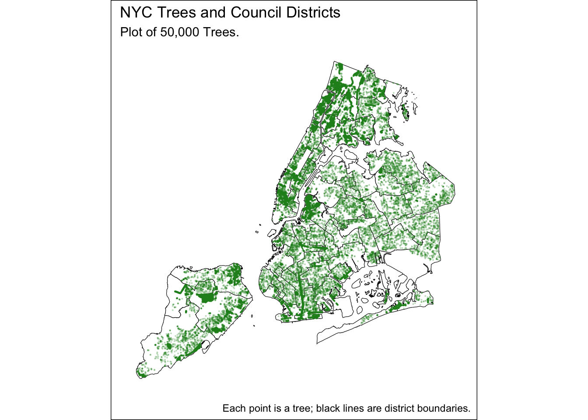
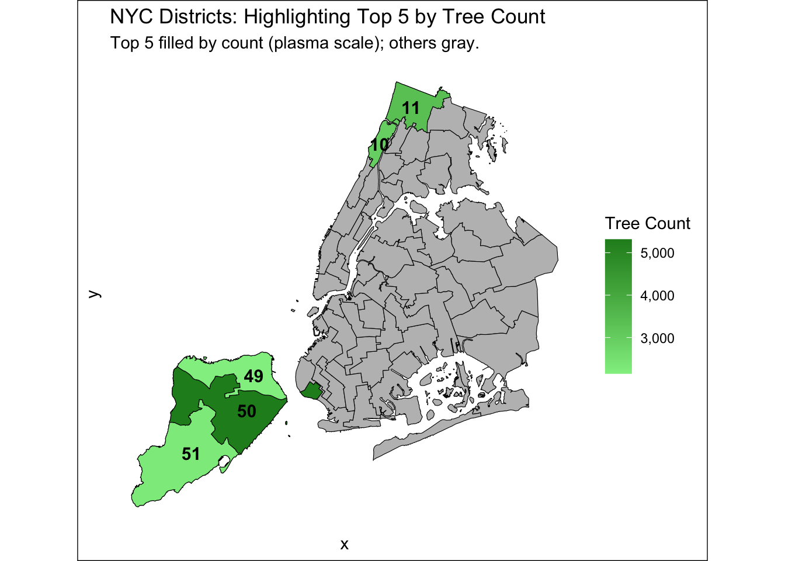
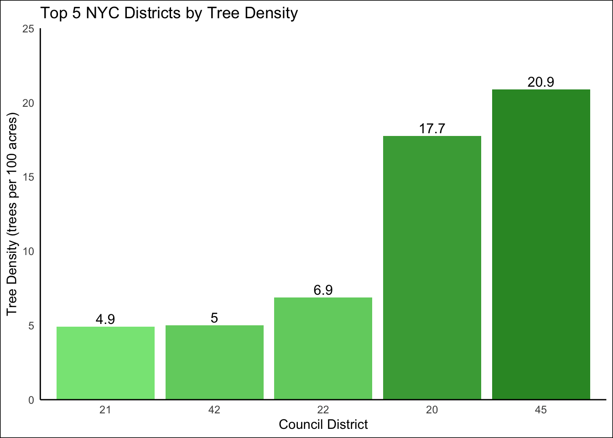
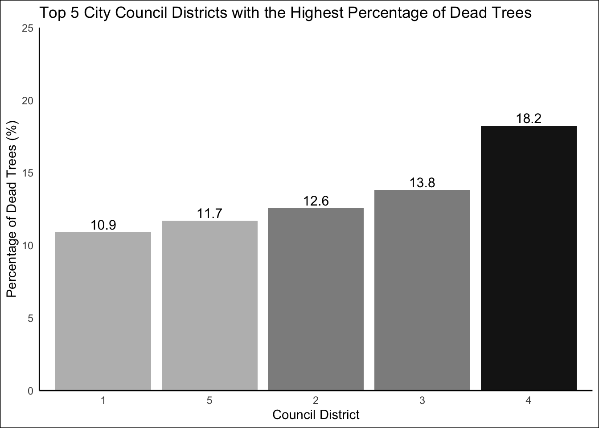
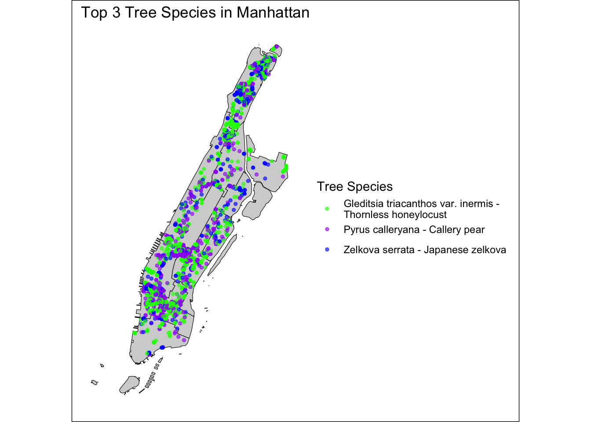
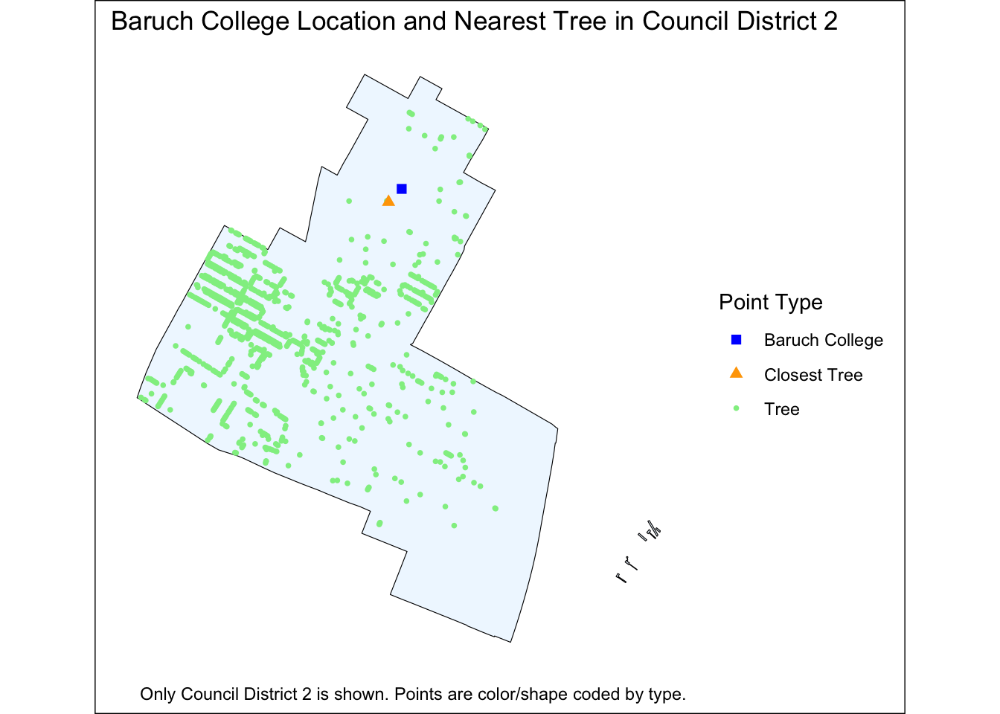
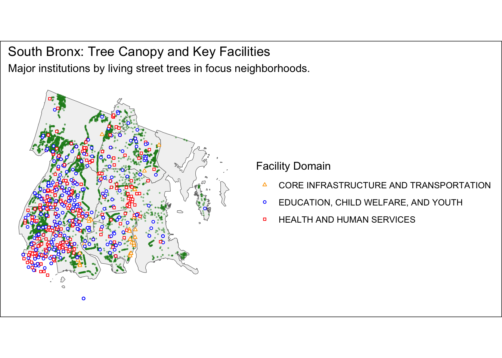
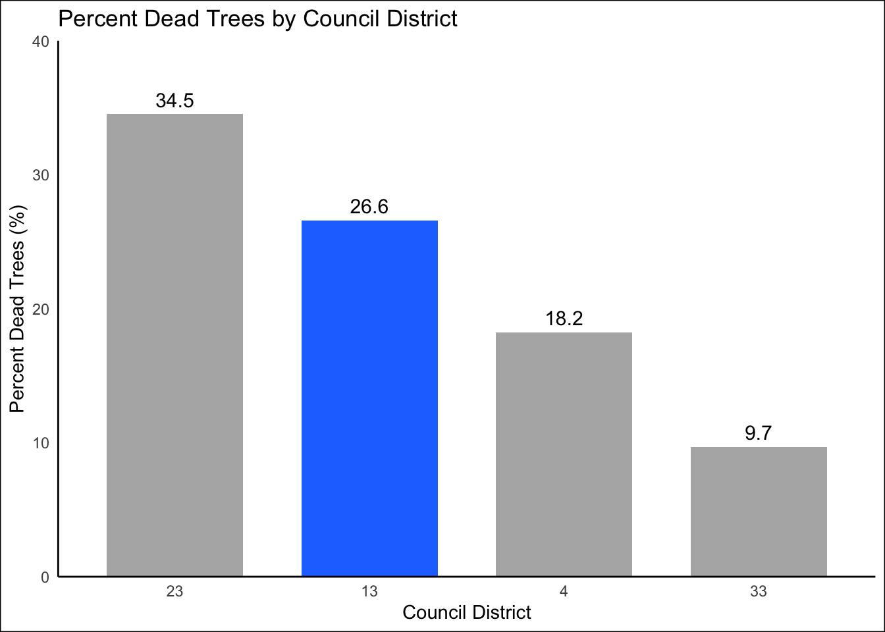

Mini-Project #03: Visualizing and Maintaining the Green Canopy of NYC
Data Integration and Initial Exploration
Mapping NYC Trees
District-Level Analyses of Trees
1. Which council district has the most trees?

The council district with the most tree is council district 50 with a total of 5,313 trees.
2. Which council district has the highest density of trees?

The council district with the highest density of trees is district 42.
3. Which district has highest fraction of dead trees out of all trees?

The district with the highest percentage of dead trees is district 1.
4. What is the most common tree species in Manhattan?

The most common tree species in Manhattan is Gleditsia triacanthos var. inermis - Thornless honeylocust with a total of 1,622 trees.
5. What is the species of the tree closest to Baruch’s campus?

The closest tree species to Baruch is the Pyrus calleryana - Callery pear.
NYC Parks Proposal
Proposed Tree Program for the South Bronx
Project Description
As a city council staffer and native of the South Bronx, I propose expanding tree planting and maintenance in our district, focusing on increasing canopy cover, shade, and ecological benefits. This initiative addresses the urgent neighborhood needs such as reducing extreme heat, improving air quality, lowering asthma risk, and collaborating for a healthier urban environment.
Quantitative Project Scope
We are proposing planting 1,000 new trees across Bronx Districts 11-18, focusing distribution according to each district’s proportion of poor or dead trees as identified in our inventory. In addition, we recommend a field review and assessment of all trees with ‘unknown’ condition to determine their status and identity cases requiring maintenance, removal, or replacement.
Neighborhood Map Visual

The map visualizes the South Bronx, emphasizing major community facilities by domain—Education, Child Welfare, and Youth (including public K-12 schools and GED/high school equivalency centers), Health and Human Services (such as hospitals and clinics), and Core Infrastructure and Transportation (comprising bus depots and terminals). These locations are mapped alongside living street trees and local district boundaries. The proposed new trees are necessary because large portions of the neighborhood remain vulnerable to extreme heat, with insufficient shade near these critical school, health, and transit sites. Planting additional street trees will directly reduce surface temperatures, improve air quality, and shade key community gathering spaces—creating a safer, healthier environment for residents and children as climate risks intensify. By prioritizing shade near these critical institutions, the proposal enhances both immediate resilience and equitable climate adaptation for New York’s most heat-exposed communities.
District Comparison

The bar chart displays the percentage of dead trees in four council districts, with Bronx District 13 highlighted in blue and the others in gray for easy comparison. Although districts 23, 4, and 33 have many trees and are known for substantial canopy coverage, District 13 stands out with a noticeably higher percent of dead trees. This disparity reveals that simply having a large number of street trees does not guarantee their health or resilience. The elevated mortality rate in District 13 underscores an urgent need for targeted tree replacement, ongoing maintenance, and greater investment in canopy care, especially when compared to peer districts with healthier tree populations. This finding helps guide priorities for equitable urban greening and supports focused shade interventions where vulnerability remains high.
By investing in a robust tree planting and maintenance program for Bronx District 13 and its neighbors, the city can deliver meaningful public health, climate resilience, and neighborhood equity—advancing a greener future for all New Yorkers.